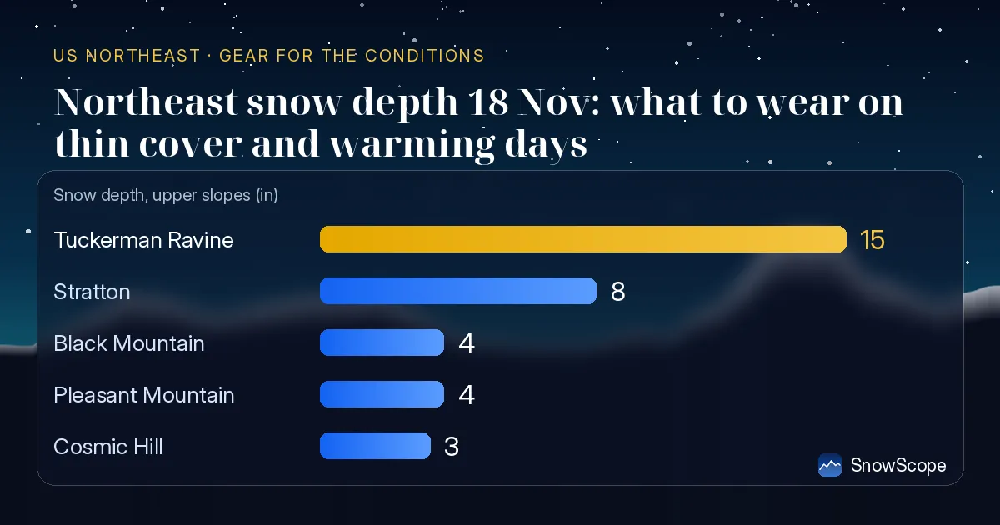
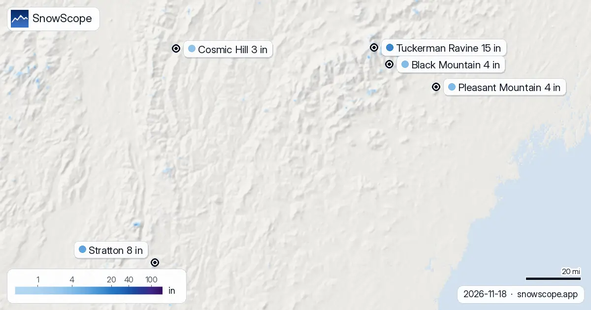

Northeast snow depth 18 Nov: what to wear on thin cover and warming days
Snow cover in the Northeast has dropped sharply: only 16 resorts hold skiable snow today, down from 34 two days ago. Thin snow on upper slopes and warming air mean you need to choose your gear and terrain carefully over the next few days.
See the live snow forecast for Tuckerman Ravine in the SnowScope appSnow depth, powder alerts and the 3D map, free.
Where snow is deepest and what that means for gear
Tuckerman Ravine leads the region with 38 cm (15 in) on upper slopes. Stratton follows at 20 cm (8 in), while Black Mountain, Pleasant Mountain and Cosmic Hill all sit between 8 and 9 cm (3 in). That thin base matters: rocks and roots will catch your edges, so you need sharp skis or a board that handles hard, choppy snow.
Snow depth below 20 cm (8 in) means you should bring glide wax and check your base before you go. Rocks under shallow snow can damage bases fast, so wax protects your equipment. At Tuckerman Ravine, the deeper cover gives more margin, but even 38 cm is thin for mid-November—it still requires caution.
| Resort | Snow depth | New snow, 72 h | Coming, next days | Top |
|---|---|---|---|---|
| Tuckerman Ravine | 15 in (38 cm) | 0 in (0 cm) | 0 in (0 cm) | – |
| Stratton | 8 in (20 cm) | 0 in (0 cm) | 0 in (0 cm) | 3,881 ft (1,183 m) |
| Black Mountain | 4 in (9 cm) | 0 in (0 cm) | 0 in (0 cm) | 2,247 ft (685 m) |
| Pleasant Mountain | 4 in (9 cm) | 0 in (0 cm) | 0 in (0 cm) | 1,765 ft (538 m) |
| Cosmic Hill | 3 in (8 cm) | 0 in (0 cm) | 0 in (0 cm) | 764 ft (233 m) |

Rain crust and warming: layer up and plan your day
Stratton, Black Mountain, Pleasant Mountain and Cosmic Hill all face rain-crust risk today and tomorrow. The freezing level is high—above 3,200 m across the region on 18 November—which means warm air and rain will reach the snow at lower heights. That creates a hard, icy crust when the surface melts during the day and refreezes at night.
Bring extra layers: a soft mid-layer shell under your jacket lets you shed bulk as the sun warms the snow by mid-morning. Plan to ski early, when the surface is still firm and faster. By afternoon, rain-crust snow becomes slow and grabby, so an afternoon descent will be harder work and your knees will feel it. Expect boilerplate conditions, especially on lower and middle elevations where the crust forms fastest.
No fresh snow forecast: bring edge tools and patience
The forecast for 19, 20 and 21 November shows zero new snow across all measured resorts. That means conditions will not improve; they will only thin further as the existing shallow snow gets tracked and scraped.
Bring a small file and a scraper in your pack. Without new snow to cover rough patches, you will ski over ice, crud and exposed terrain. Keep your edges sharp and your base flat, or the last runs of the day will be a struggle. Soft skis or a short board are easier to turn on boilerplate; stiffer equipment can chatter and fight you.
Temperature swings: Wednesday to Friday
On Wednesday 18 November, the freezing level swings between 3,160 m and 3,700 m across the region. That is well above most Northeast summits, so expect wet snow and rain at the top early, then drying as air pressure changes. By Friday 20 November, the freezing level dips to 1,330–1,560 m at mid-morning before rising again, creating a brief window when things refreeze—that is when to ski if you want fast corn snow rather than slop.
Bring a neck gaiter and goggles with good ventilation. Morning mist and cloud will make it hard to read the snow surface. Afternoon glare off wet snow will tire your eyes fast. A lens with contrast (amber or rose) helps on flat light and thin cover.
Tips for skiers
- Sharp edges are essential: rock and root strikes happen on 8–20 cm cover. File or tune your skis before you go, and carry a small whetstone.
- Ski early and high: aim for upper slopes at first light, before rain-crust forms. Descend by mid-morning, especially at Stratton, Black Mountain, Pleasant Mountain and Cosmic Hill where warming is fastest.
- Wax your base for protection: shallow snow and exposed terrain damage bases quickly. A fresh coat of hard wax reduces repair costs.
- Layer for melt: bring a mid-layer shell you can remove, since daytime freezing levels will spike well above summit height on 18–19 November. By 20 November, temperature swings will be sharper, so pack an extra fleece.
- Check official avalanche bulletins if you plan to ski off-piste: shallow snow can still slide on steep terrain when new rain lands on a crust.
About these numbers
Resort snow depths are the deepest snow on the resort's upper slopes on the date shown; they are estimates for an area, not a measurement at one point. Forecasts can change. Always read the official avalanche bulletin before going off-piste.
Official avalanche bulletins: Mount Washington Avalanche Center
Cite this report
For research, teaching or the press: the numbers and charts are free to reuse under CC BY 4.0 with this citation.
SnowScope (2026), Northeast snow depth 18 Nov: what to wear on thin cover and warming days, https://snowscope.app/blog/en/2026/11/us-northeast-what-to-bring-ski-gear-conditions-18-november-2026.html, accessed 2026-11-18
SnowScope (Atlas Labs). (2026, November 18). Northeast snow depth 18 Nov: what to wear on thin cover and warming days. SnowScope snow reports. https://snowscope.app/blog/en/2026/11/us-northeast-what-to-bring-ski-gear-conditions-18-november-2026.html
BibTeX
@misc{snowscope2026usnortheastwhattobringsk,
author = {{SnowScope (Atlas Labs)}},
title = {Northeast snow depth 18 Nov: what to wear on thin cover and warming days},
year = {2026},
month = nov,
howpublished = {\url{https://snowscope.app/blog/en/2026/11/us-northeast-what-to-bring-ski-gear-conditions-18-november-2026.html}},
note = {Published 2026-11-18 21:02 UTC; accessed 2026-11-18}
}· CC BY 4.0 · Methods, data and tools →
Tuckerman Ravine: snow and temperature by height, this winter vs last (tools) →
Follow Tuckerman Ravine
Free: a message when fresh snow is coming, and the forecast every morning.
More snow reports

Magic Mountain Ski Area in southern Vermont sits on thin natural snow. Peak depths at the base are 21 in (54 cm); at the top, 26 in (67 cm). Data from 46 past winters, November 2026.

A practical kit list for Stowe, Vermont: layers, face cover, goggles, sharp edges and hand warmers, tied to the snow of 46 past winters on Mount Mansfield.

2 of 4: that is how many resorts in the US Northeast are clearly above normal today. How does this winter look so far? We set today's snow at 4 …